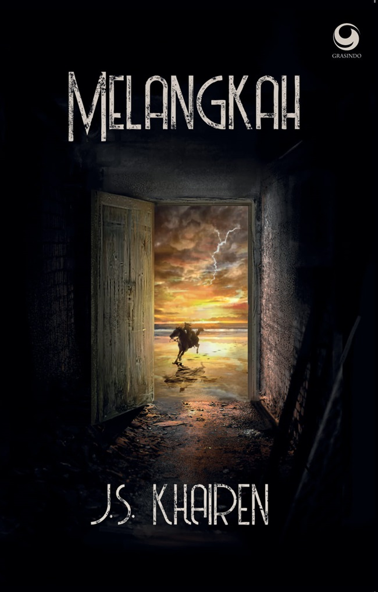

Melangkah
Listrik padam di seluruh Jawa dan Bali secara misterius. Ancaman nyata kekuatan baru yang hendak menaklukkan Nusantara. Saat yang sama, empat sahabat mendarat di Sumba, hanya untuk mendapati nasib ratusan juta manusia ada di tangan mereka! Empat mahasiswa ekonomi ini, harus bertarung melawan pasukan berkuda yang bisa melontarkan listrik! Semua dipersulit oleh seorang buronan tingkat tinggi bertopeng pahlawan yang punya rencana mengerikan. Ternyata pesan arwah nenek moyang itu benar-benar terwujud. “Akan datang kegelapan yang berderap, bersama ribuan kuda raksasa di kala malam. Mereka bangun setelah sekian lama, untuk menghancurkan Nusantara. Seorang lelaki dan seorang perempuan ditakdirkan membaurkan air di lautan dan api di pegunungan. Menyatukan tanah yang menghujam, dan udara yang terhampar.”